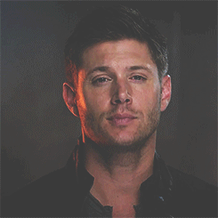
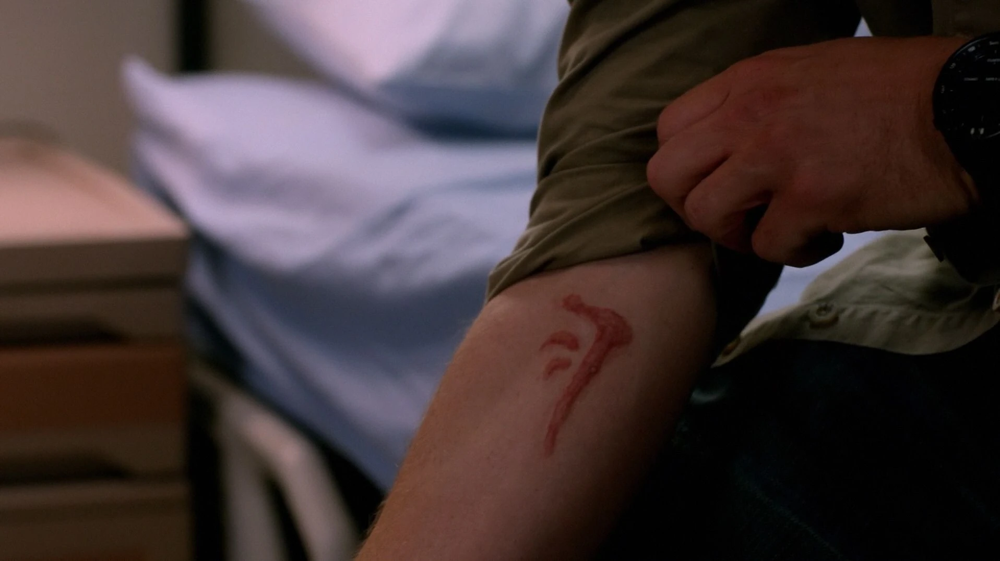
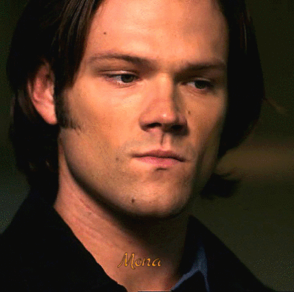
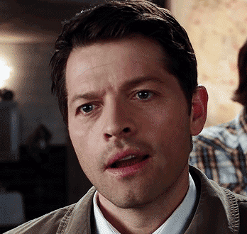
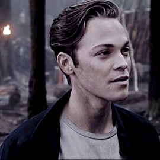
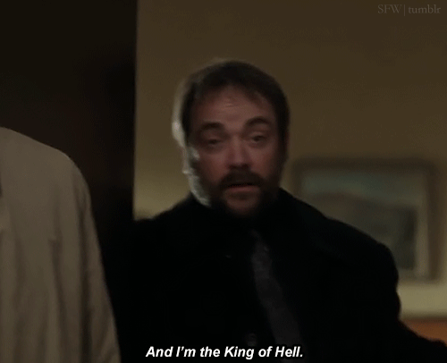

WITH SUPERNATURAL ABILITIES
| APPEARANCE | DESCRIPTION | ABILITY |
|---|---|---|
|  Dean Winchester (Mark of Cain) |
From what was once a raised hunter, to hunt and find the demon that killed his mom, Dean Winchester now possesses extraordinary power and murderous intent. Due to The Mark of Cain, right on his arm. This rises from just a simple wound to the Mark transforming into a Knight of Hell - so it may live on, and never perish. |
|
|  Soulless Sam Winchester |
As a fellow Winchester, raised a hunter alongside his brother Dean, Sam has lost his soul after he was freed from Lucifer's cage. This not only causes him to have a colder heart, but a way more powerful, newer, and stronger him. |
|
|  Casifier |
In an attempt to cage Lucifer in hell, an angel named Castiel gets used as a vessel, entirely freeing the Devil himself to the real world, gaining all of his power and posing a giant threat to the entirety of humankind. That's where the name Casifier comes in, Castiel and Lucifer. |
|
|  Jack Kline |
As the only offspring of the Devil, Jack is just as strong as him. However, he chooses to use his power for the good rather than the bad, unlike the wishes of his father. Jack possesses such great power that he even defeated God - making him His replacement. With this, not only does he have incredible power, but also utter divineness. |
|
|  Crowley |
A charismatic and powerful demon to The King of Crossroads and eventually the King of Hell, in absence of Lucifer. Though Crowley often likes to make people uncomfortable with snarky remarks, he has a strict business ethic and like to keep his integrity in check. While initially an antagonist, Crowley’s complex relationship with the Winchester brothers and his occasional cooperation with them reveal layers of pragmatism and surprising vulnerability, helping them in defeating world-destroying enemies with his demon powers. |
|